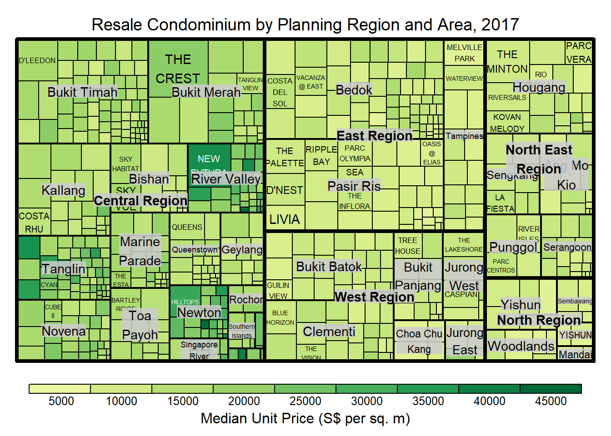

pacman::p_load(treemap, treemapify, tidyverse) Hands-on Exercise 9E
16 Treemap Visualisation with R
16.1 Overview
In this hands-on exercise, you will gain hands-on experiences on designing treemap using appropriate R packages. The hands-on exercise consists of three main section. First, you will learn how to manipulate transaction data into a treemap strcuture by using selected functions provided in dplyr package. Then, you will learn how to plot static treemap by using treemap package. In the third section, you will learn how to design interactive treemap by using d3treeR package.
16.2 Installing and Launching R Packages
Before we get started, you are required to check if treemap and tidyverse pacakges have been installed in you R.
16.3 Data Wrangling
In this exercise, REALIS2018.csv data will be used. This dataset provides information of private property transaction records in 2018. The dataset is extracted from REALIS portal (https://spring.ura.gov.sg/lad/ore/login/index.cfm) of Urban Redevelopment Authority (URA).
16.3.1 Importing the data set
In the code chunk below, read_csv() of readr is used to import realis2018.csv into R and parsed it into tibble R data.frame format.
realis2018 <- read_csv("data/realis2018.csv")The output tibble data.frame is called realis2018.
16.3.2 Data Wrangling and Manipulation
The data.frame realis2018 is in trasaction record form, which is highly disaggregated and not appropriate to be used to plot a treemap. In this section, we will perform the following steps to manipulate and prepare a data.frtame that is appropriate for treemap visualisation:
group transaction records by Project Name, Planning Region, Planning Area, Property Type and Type of Sale, and
compute Total Unit Sold, Total Area, Median Unit Price and Median Transacted Price by applying appropriate summary statistics on No. of Units, Area (sqm), Unit Price ($ psm) and Transacted Price ($) respectively.
Two key verbs of dplyr package, namely: group_by() and summarize() will be used to perform these steps.
group_by() breaks down a data.frame into specified groups of rows. When you then apply the verbs above on the resulting object they’ll be automatically applied “by group”.
Grouping affects the verbs as follows:
grouped select() is the same as ungrouped select(), except that grouping variables are always retained.
grouped arrange() is the same as ungrouped; unless you set .by_group = TRUE, in which case it orders first by the grouping variables.
mutate() and filter() are most useful in conjunction with window functions (like rank(), or min(x) == x). They are described in detail in vignette(“window-functions”).
sample_n() and sample_frac() sample the specified number/fraction of rows in each group.
summarise() computes the summary for each group.
In our case, group_by() will used together with summarise() to derive the summarised data.frame.
Recommendation
Students who are new to dplyr methods should consult Introduction to dplyr before moving on to the next section.
16.3.3 Grouped summaries without the Pipe
The code chank below shows a typical two lines code approach to perform the steps.
realis2018_grouped <- group_by(realis2018, `Project Name`,
`Planning Region`, `Planning Area`,
`Property Type`, `Type of Sale`)
realis2018_summarised <- summarise(realis2018_grouped,
`Total Unit Sold` = sum(`No. of Units`, na.rm = TRUE),
`Total Area` = sum(`Area (sqm)`, na.rm = TRUE),
`Median Unit Price ($ psm)` = median(`Unit Price ($ psm)`, na.rm = TRUE),
`Median Transacted Price` = median(`Transacted Price ($)`, na.rm = TRUE))
Note
- Aggregation functions such as sum() and meadian() obey the usual rule of missing values: if there’s any missing value in the input, the output will be a missing value. The argument na.rm = TRUE removes the missing values prior to computation.
The code chunk above is not very efficient because we have to give each intermediate data.frame a name, even though we don’t have to care about it.
16.3.4 Grouped summaries with the pipe
The code chunk below shows a more efficient way to tackle the same processes by using the pipe, %>%:
Recommendation
To learn more about pipe, visit this excellent article: Pipes in R Tutorial For Beginners.
realis2018_summarised <- realis2018 %>%
group_by(`Project Name`,`Planning Region`,
`Planning Area`, `Property Type`,
`Type of Sale`) %>%
summarise(`Total Unit Sold` = sum(`No. of Units`, na.rm = TRUE),
`Total Area` = sum(`Area (sqm)`, na.rm = TRUE),
`Median Unit Price ($ psm)` = median(`Unit Price ($ psm)`, na.rm = TRUE),
`Median Transacted Price` = median(`Transacted Price ($)`, na.rm = TRUE))16.4 Designing Treemap with treemap Package
treemap package is a R package specially designed to offer great flexibility in drawing treemaps. The core function, namely: treemap() offers at least 43 arguments. In this section, we will only explore the major arguments for designing elegent and yet truthful treemaps.
16.4.1 Designing a static treemap
In this section, treemap() of Treemap package is used to plot a treemap showing the distribution of median unit prices and total unit sold of resale condominium by geographic hierarchy in 2017.
First, we will select records belongs to resale condominium property type from realis2018_selected data frame.
realis2018_selected <- realis2018_summarised %>%
filter(`Property Type` == "Condominium", `Type of Sale` == "Resale")16.4.2 Using the basic arguments
The code chunk below designed a treemap by using three core arguments of treemap(), namely: index, vSize and vColor.
treemap(realis2018_selected,
index=c("Planning Region", "Planning Area", "Project Name"),
vSize="Total Unit Sold",
vColor="Median Unit Price ($ psm)",
title="Resale Condominium by Planning Region and Area, 2017",
title.legend = "Median Unit Price (S$ per sq. m)"
)
Things to learn from the three arguments used:
index
The index vector must consist of at least two column names or else no hierarchy treemap will be plotted.
If multiple column names are provided, such as the code chunk above, the first name is the highest aggregation level, the second name the second highest aggregation level, and so on.
vSize
- The column must not contain negative values. This is because it’s vaues will be used to map the sizes of the rectangles of the treemaps.
Warning:
The treemap above was wrongly coloured. For a correctly designed treemap, the colours of the rectagles should be in different intensity showing, in our case, median unit prices.
For treemap(), vColor is used in combination with the argument type to determines the colours of the rectangles. Without defining type, like the code chunk above, treemap() assumes type = index, in our case, the hierarchy of planning areas.
16.4.3 Working with vColor and type arguments
In the code chunk below, type argument is define as value.
treemap(realis2018_selected,
index=c("Planning Region", "Planning Area", "Project Name"),
vSize="Total Unit Sold",
vColor="Median Unit Price ($ psm)",
type = "value",
title="Resale Condominium by Planning Region and Area, 2017",
title.legend = "Median Unit Price (S$ per sq. m)"
)
Thinking to learn from the conde chunk above.
The rectangles are coloured with different intensity of green, reflecting their respective median unit prices.
The legend reveals that the values are binned into ten bins, i.e. 0-5000, 5000-10000, etc. with an equal interval of 5000.
16.4.4 Colours in treemap package
There are two arguments that determine the mapping to color palettes: mapping and palette. The only difference between “value” and “manual” is the default value for mapping. The “value” treemap considers palette to be a diverging color palette (say ColorBrewer’s “RdYlBu”), and maps it in such a way that 0 corresponds to the middle color (typically white or yellow), -max(abs(values)) to the left-end color, and max(abs(values)), to the right-end color. The “manual” treemap simply maps min(values) to the left-end color, max(values) to the right-end color, and mean(range(values)) to the middle color.
16.4.5 The “value” type treemap
The code chunk below shows a value type treemap.
treemap(realis2018_selected,
index=c("Planning Region", "Planning Area", "Project Name"),
vSize="Total Unit Sold",
vColor="Median Unit Price ($ psm)",
type="value",
palette="RdYlBu",
title="Resale Condominium by Planning Region and Area, 2017",
title.legend = "Median Unit Price (S$ per sq. m)"
)
Thing to learn from the code chunk above:
although the colour palette used is RdYlBu but there are no red rectangles in the treemap above. This is because all the median unit prices are positive.
The reason why we see only 5000 to 45000 in the legend is because the range argument is by default c(min(values, max(values)) with some pretty rounding.
16.4.6 The “manual” type treemap
The “manual” type does not interpret the values as the “value” type does. Instead, the value range is mapped linearly to the colour palette.
The code chunk below shows a manual type treemap.
treemap(realis2018_selected,
index=c("Planning Region", "Planning Area", "Project Name"),
vSize="Total Unit Sold",
vColor="Median Unit Price ($ psm)",
type="manual",
palette="RdYlBu",
title="Resale Condominium by Planning Region and Area, 2017",
title.legend = "Median Unit Price (S$ per sq. m)"
)
Things to learn from the code chunk above:
- The colour scheme used is very copnfusing. This is because mapping = (min(values), mean(range(values)), max(values)). It is not wise to use diverging colour palette such as RdYlBu if the values are all positive or negative
To overcome this problem, a single colour palette such as Blues should be used.
treemap(realis2018_selected,
index=c("Planning Region", "Planning Area", "Project Name"),
vSize="Total Unit Sold",
vColor="Median Unit Price ($ psm)",
type="manual",
palette="Blues",
title="Resale Condominium by Planning Region and Area, 2017",
title.legend = "Median Unit Price (S$ per sq. m)"
)
16.4.7 Treemap Layout
treemap() supports two popular treemap layouts, namely: “squarified” and “pivotSize”. The default is “pivotSize”.
The squarified treemap algorithm (Bruls et al., 2000) produces good aspect ratios, but ignores the sorting order of the rectangles (sortID). The ordered treemap, pivot-by-size, algorithm (Bederson et al., 2002) takes the sorting order (sortID) into account while aspect ratios are still acceptable.